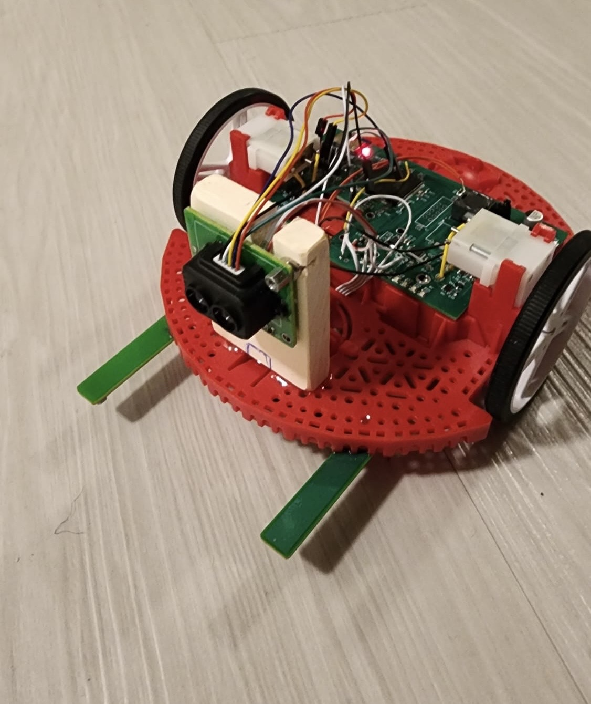
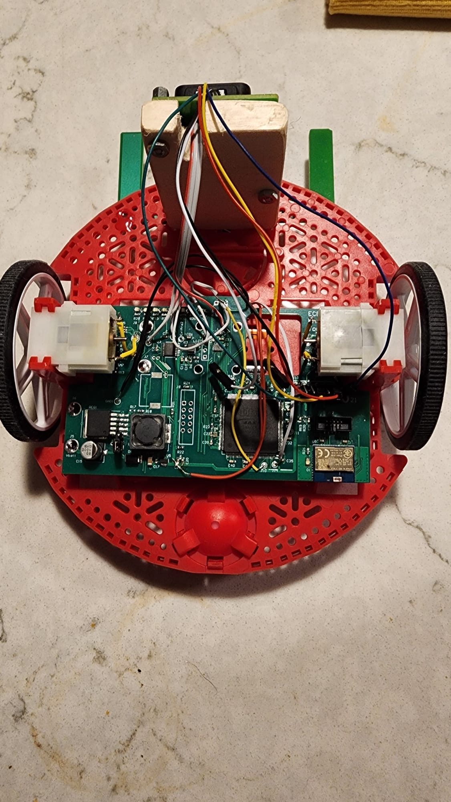
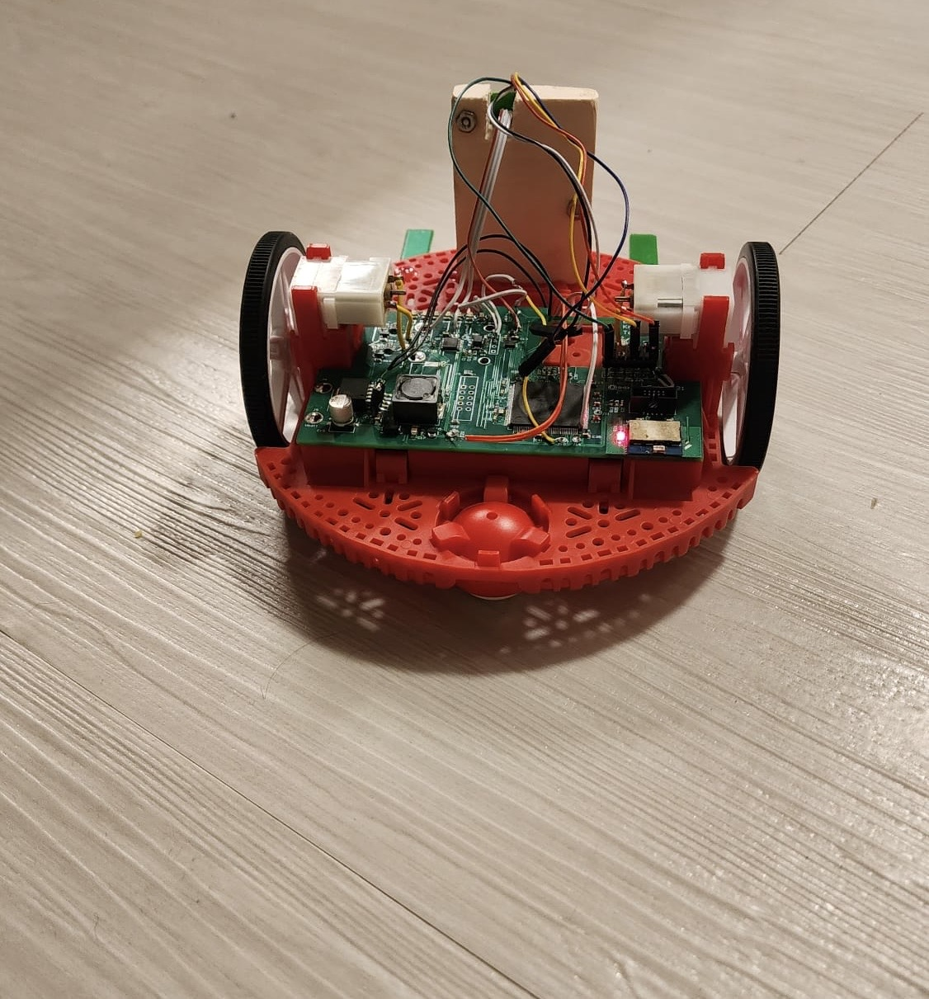

Roomba Project
|  |  |  |
|---|
I had the opportunity to model the behavior of a Roomba through the use of an FPGA. This independent project allowed me to truly understand the capability of a hardware descriptive language like Verilog. In the beginning of this project I broke down the robot's behavior into two parts: exploring an area and seeking a homebase. Both states were initially designed as a state machine to model the entire robot's decision making. I was then able to implement obstacle avoidance using both a front-facing LIDAR sensor and a downward-facing IR sensor to make sure the robot doesn't bump into anything in front of it while also being able to watch out for steep drop-offs. When thinking about the seek home state, the robot was using an IR receiver and a hall effect sensor in addition to the obstacle avoidance system. The robot would do a 360° scan of the room to find what heading the strongest IR reading is coming from because there is an IR emitter on the homebase, and heads in that direction. The robot will then know it reached the homebase because there's a magnet right in front of the homebase which would trigger the hall effect sensor and the robot will stop.